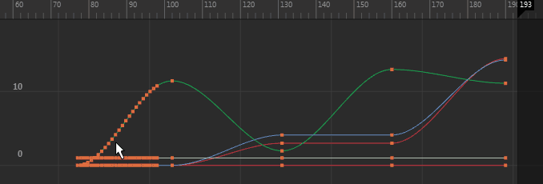

在曲线图编辑器(Graph Editor)中，单击  ，或选择“编辑 > 变换工具 > 晶格变形关键帧工具”(Edit > Transformation Tools > Lattice Deform Keys Tool)，使用“晶格变形关键帧工具”(Lattice Deform Keys Tool)来操纵曲线。
，或选择“编辑 > 变换工具 > 晶格变形关键帧工具”(Edit > Transformation Tools > Lattice Deform Keys Tool)，使用“晶格变形关键帧工具”(Lattice Deform Keys Tool)来操纵曲线。

“晶格变形关键帧”(Lattice Deform Keys)工具用于围绕关键帧组绘制晶格变形器，以便您可以一次操纵许多关键帧。该工具可提供对动画曲线的高级别控制。另请参见使用晶格操纵器操纵曲线。
围绕关键帧组绘制晶格之后，可以移动该晶格的控制点，以变形受影响的动画曲线，也可围绕拾取的点缩放晶格点，以变换受影响的曲线。
您还可以使用“晶格变形关键帧工具”(Lattice Deform Keys Tool)，将位于单个（水平或垂直）图表视图轴中的关键帧变形。
选择“变换工具 > 晶格变形关键帧工具”(Transformation Tools > Lattice Deform Keys Tool) >  以打开以下“晶格设置”(Lattice Settings)。
以打开以下“晶格设置”(Lattice Settings)。
- 列(Columns)数
-
为当前晶格操纵器指定列数。最小列数为 2，最大列数为 20。
- 行(Rows)数
-
为当前晶格操纵器指定行数。最小行数为 2，最大行数为 20。
- 衰减(Falloff)
-
指定晶格操纵器的影响级别或衰减值。
- 中键缩放(Middle Button Scales)
-
启用时，可以围绕当前晶格点缩放活动的控制点。